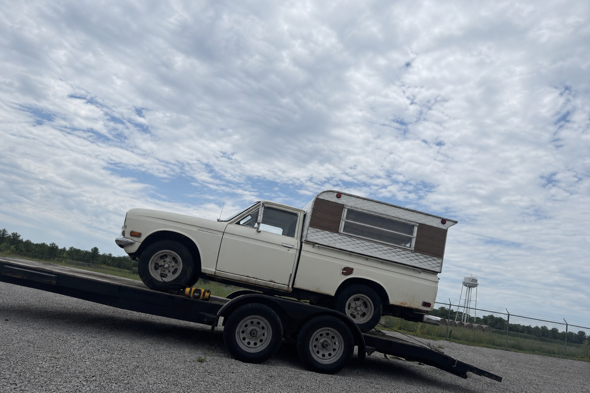

The point of a corner where you commit hardest — where the struggle to get there turns into the payoff coming out. Grit going in, spark coming out. One accent per piece, picked by mood.
Wordmark: Helvetica Bold, tight tracking, all-caps "OIO" — straight off the source lockup, no circle, no outline. Badge: solid fill only — never an outlined ring. White on dark is the default for both; invert only when the surface forces it.
The OIO badge is one instance of a bigger idea: the solid circle is a core brand shape. It carries the wordmark, but it also holds connector words (or / vs / to), an ampersand, or a number — anywhere two things need joining or a mark needs to sit apart from the type. Always solid fill, never an outlined ring — same rule as the badge. White-on-black is the default; invert only when the surface forces it.
The circle is one fixed, centred unit. To resize, scale the whole thing —
one --d (diameter) value drives circle, glyph size, and
the frozen optical-centring offset together. Never re-tune the text, padding, or line-height per size; it
stays centred at any scale.
Same mix ratio for every color, so the ramps stay visually consistent: 100/300 mix the base 80%/40% toward white, 500 is the base hex unchanged, 700/900 mix 35%/65% toward black. Use 700 for hover/pressed states and 900 for a low-opacity wash on black.
Neither is a mood pick like Spark/Grit — per Impeccable's color guidance, semantic/state color stays separate from brand accents. Rust is texture (vintage). Flag is a status signal (confirmed/priced), not a headline color.
Warm-biased, not neutral gray — leans the same direction as the accents so it reads as chosen.
The type suite — two Helvetica cuts and one vintage script, on one shared scale. Regular/Bold carries every size; Condensed Black and SignPainter only ever go loud.
One scale, rem-based, ~1.25 ratio hand-rounded to clean values — named after HTML elements through h1, then hero-[t-shirt size] beyond it. Every size below is one of these twelve steps; nothing is picked ad hoc.
At a glance
Helvetica is the lead font — the historical OIO workhorse. Body copy, labels, captions, UI, pill text, anything long-form or set small. Neutral, clean, reliable. If a piece isn't a display headline, it's Helvetica.
Same family as the body face, different cut — tall, condensed, all-caps, reserved for the one word that shouts. Regular and Bold aren't condensed or heavy enough to read as the megaphone from a phone screen; Condensed Black is. Tight leading, 80–90% of font size. Never below H2 — that floor is the rule.
Sourced from the Redline Revival thumbnail. Never body copy, captions, or labels — hero sizes only, full stop. Nothing below Hero LG (120px) ever ships. Spark yellow is the common case; Rust orange reads more patina/vintage.
Sits in the corner of a thumbnail or video overlay to identify the car or event at a glance — always fact first, then the name, so it reads the same way every time whether it's a build update or an event recap. Drop it wherever there's clear space in the frame, usually a top or bottom corner, clear of the subject. The boxed side always pops against its own frame; the plain side just matches it — dark shot, dark shot, light shot, light shot.
The two-tier headline move, pulled straight
from the thumbnail archive in refs/thumbexamples.
Three rules the real footage follows every time: (1) a translucent black
box carries the text — the photo reads through it faintly; (2) both tiers
are one heavy face split by colour — the wide Helvetica Bold/Black cut, one
line white, one line the mood accent, never two different fonts; (3) the
first row and second row are flush edge-to-edge — the tip of the top
word's first letter aligns exactly with the tip of the bottom word's first letter, and their last
letters end exactly together on the right, with zero pixel overhang
either side. Font-size alone can't do this — differing letterform side-bearings (e.g. a rounded
"S" vs. a flat "T") mean the two words also need a small horizontal nudge (`transform: translateX()`)
to bring the left edges flush before sizing closes the right edge. Never a fixed small/large ratio,
and a connector circle in the top row counts toward that row's edge-to-edge span. One accent per
piece, picked by mood; never two as co-headline colours.
